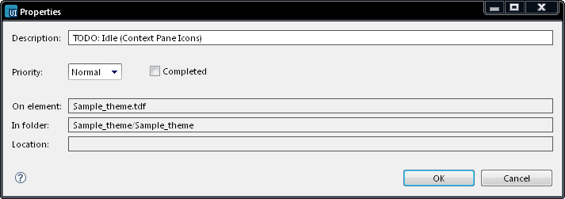

Add Task
This option adds a task to the current workspace for the selected
component. When a task is added, the task Properties dialog is displayed
providing:
- Description — a
default description based on the component and screen is provided, you
can change this if you wish
- Priority — you can
set a priority for the task as High, Normal (the default), or Low.
- Completed — you
would normally leave this unchecked when creating a task to show the
task is yet to be completed.
Read only values are also set for On Element, In Folder, and Location
to match the component selected.

Figure: Add Task
For more information on using tasks see Using Tasks